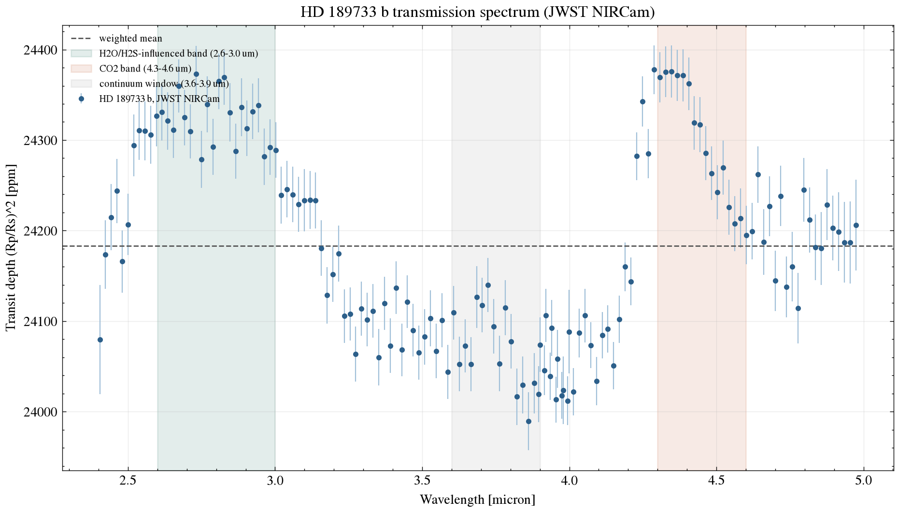

Exoplanet Atmosphere Report · JWST NIRCam
Famous as the "blue planet" — its deep azure color, inferred from scattered starlight rather than a true photograph, comes from high-altitude silicate haze. One of the most intensively studied hot Jupiters, this page runs a simple two-window band-contrast statistic on its JWST NIRCam transmission spectrum and reports it next to the retrieval-based molecular significances Fu et al. (2024) actually publish.
Queried live from the NASA Exoplanet Archive TAP service (pscomppars).
| Radius | 12.67 Earth radii (~1.13 Jupiter radii) |
|---|---|
| Mass | 359.1 Earth masses (~1.13 Jupiter masses) |
| Orbital period | 2.22 days |
| Semi-major axis | 0.0313 AU |
| Equilibrium temperature | 1209 K |
| Host star | HD 189733, K-type dwarf, Teff = 5052 K, 0.75 Rsun, 0.79 Msun |
| Distance | 19.8 parsecs (~64.5 light-years) |
| Discovery | 2005, radial velocity, transit confirmed shortly after |
HD 189733 b's brightness and proximity (under 65 light-years away) have made it one of the single most observed exoplanets since its 2005 discovery: it hosts the first exoplanet weather map (Knutson et al., 2007), the first detection of scattered-light Rayleigh haze that gave rise to its "blue planet" reputation (Pont et al., 2013; the color itself was inferred, not directly imaged), and now, with JWST, some of the highest-precision transmission spectra obtained for any exoplanet.
The data behind this report comes from a JWST NIRCam study reporting a metal-enriched atmosphere with a detection of hydrogen sulfide (H2S) — a molecule rarely confirmed in an exoplanet atmosphere — alongside water and carbon dioxide.
The figure is generated directly from the reduced NIRCam spectrum. Two wavelength windows are compared against a nearby continuum window — a quick way to see where the spectrum has structure, but not the same thing as identifying which molecule is responsible.

scripts/analyze_spectrum.py.The 22.1σ and 24.7σ numbers above are this page's own band-contrast signal-to-noise on a two-window comparison — they measure how much a wavelength range stands out from a nearby continuum, not the significance of any one molecule. A window like 2.6-3.0 microns has both H2O and H2S contributing, and the continuum choice itself shapes the result. Fu et al. (2024) get their molecular significances from a full atmospheric retrieval that models all the absorbers and the continuum together: H2O at 13.4σ, CO2 at 11.2σ, CO at 5σ, H2S at 4.5σ. Both approaches agree the spectrum has real structure in these regions — only the retrieval says which molecule is doing the absorbing.
System parameters come from the NASA Exoplanet Archive TAP service. The spectrum is reduced JWST NIRCam data released publicly on Zenodo (record 10.5281/zenodo.11459715). See data/ for the file as downloaded and scripts/analyze_spectrum.py for the band-comparison analysis (python scripts/analyze_spectrum.py to rerun it).